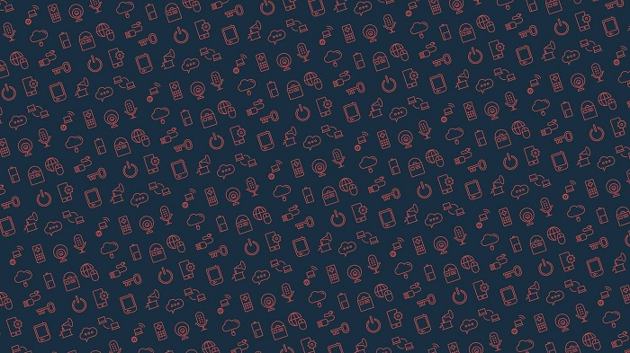

<div class = "border settings settings__user" *ngIf="user">
  <div class="settings__backheader">
    <div>
      <input
        style="display: none"
        #fileInputFont
        type="file" 
        (change)="onFontSelected($event)"
      >
    </div>
    <div class ="settings__backheader-button">
      <button (click)="fileInputFont.click()" >изменить фон</button>
      <button>удалить фон</button>
    </div>
    
    
    
  </div>
  
  <div class="avatar" (click)="fileInputIcon.click()">
    <input
      style="display: none"
      #fileInputIcon
      type="file" 
      (change)="onIconSelected($event)"
    >
    <div>
      
      
      <div *ngIf="selectedIconUrl == null && (user.icon == '' || user.icon == null)">
        
        <svg xmlns="http://www.w3.org/2000/svg" aria-hidden="true" role="img" width="1em" height="1em" preserveAspectRatio="xMidYMid meet" viewBox="0 0 36 36"><path fill="currentColor" d="M32 8h-7.3l-1.06-2.72A2 2 0 0 0 21.78 4h-7.56a2 2 0 0 0-1.87 1.28L11.3 8H4a2 2 0 0 0-2 2v20a2 2 0 0 0 2 2h28a2 2 0 0 0 2-2V10a2 2 0 0 0-2-2Zm0 22H4V10h8.67l1.55-4h7.56l1.55 4H32Z" class="clr-i-outline clr-i-outline-path-1"/><path fill="currentColor" d="M9 19a9 9 0 1 0 9-9a9 9 0 0 0-9 9Zm16.4 0a7.4 7.4 0 1 1-7.4-7.4a7.41 7.41 0 0 1 7.4 7.4Z" class="clr-i-outline clr-i-outline-path-2"/><path fill="currentColor" d="M9.37 12.83a.8.8 0 0 0-.8-.8h-2.4a.8.8 0 0 0 0 1.6h2.4a.8.8 0 0 0 .8-.8Z" class="clr-i-outline clr-i-outline-path-3"/><path fill="currentColor" d="M12.34 19a5.57 5.57 0 0 0 3.24 5l.85-1.37a4 4 0 1 1 4.11-6.61l.86-1.38A5.56 5.56 0 0 0 12.34 19Z" class="clr-i-outline clr-i-outline-path-4"/><path fill="none" d="M0 0h36v36H0z"/></svg>
      </div>
    </div>
  </div>
  <div class="settings__body">
    <div class="name">

    </div>
    <div class="info">
      <div class="text">
        <div>
          О себе
        </div>
        <input type="text" placeholder="Не более 140 символов"  [(ngModel)]="user.about">
      </div>
      <div class="text">
        <div>
          Никнайм
        </div>
        <input type="text" placeholder="Не более 140 символов"  [(ngModel)]="user.name">
      </div>
      <div class="text">
        <div>
          Пол
        </div>
        <select  [(ngModel)]="user.gender">
          <option>Не показывать</option>
          <option>Мужской</option>
          <option>Женский</option>
        </select>
      </div>
    </div>
    <div class="button">
      <button class="save" (click)="putUser()">
        Сохранить
      </button>
    </div>
  </div>
</div>

<app-img-crop *ngIf="isCheckCrop" [iconFile]="selectedIcon" class="set-cropper"></app-img-crop>